Trong thời đại AI, nhiều chuyên gia cho rằng chính trải nghiệm thực tế mới là nơi nuôi dưỡng những giá trị làm nên sự khác biệt của con người.
Phóng viên đã có cuộc trao đổi với anh Nguyễn Bá Tùng - Giám đốc Đào tạo, Giảng viên Thuận Thiên Naturalis - về vai trò của giáo dục kết hợp AI và trải nghiệm thiên nhiên đối với trẻ em trong mùa hè.
Mùa hè có đangbị “đánh cắp”?
PV: Nhiều phụ huynh xem mùa hè là khoảng thời gian để con học thêm ngoại ngữ, toán hay các lớp kỹ năng. Theo anh, có khi nào chúng ta đang vô tình biến mùa hè thành một “học kỳ thứ ba”?
NGUYỄN BÁ TÙNG: Tôi nghĩ điều này xuất phát từ một tâm lý khá phổ biến trong xã hội hiện nay. Nhiều phụ huynh luôn mong muốn con mình phát triển tốt hơn, học giỏi hơn và có nhiều lợi thế hơn trong học tập. Chính áp lực ấy khiến không ít gia đình tiếp tục sắp xếp lịch học dày đặc cho con ngay cả khi năm học đã kết thúc.
Mặc dù ngành giáo dục và các cơ quan quản lý đang nỗ lực giảm áp lực học thêm, nhưng nếu tâm lý cạnh tranh và kỳ vọng của xã hội chưa thay đổi thì tình trạng này vẫn sẽ tiếp diễn.
Ở một góc độ khác, nhiều lớp học hè hiện nay còn đóng vai trò như một hình thức “giữ trẻ”. Đời sống đô thị đã thay đổi rất nhiều so với trước đây. Trẻ em ngày càng ít không gian vui chơi, phần lớn thời gian của các em diễn ra trong căn hộ, trong nhà hoặc trước màn hình thiết bị điện tử.
Chính vì vậy, nhiều gia đình lựa chọn cho con học ngoại ngữ, tin học hoặc các lớp kỹ năng không hoàn toàn vì áp lực thành tích, mà còn để hạn chế thời gian con sử dụng mạng xã hội hay các thiết bị số. Tuy nhiên, nếu mùa hè chỉ được lấp đầy bằng các lịch học thì chúng ta rất dễ bỏ lỡ giá trị quan trọng nhất của mùa hè: cơ hội để trẻ trải nghiệm cuộc sống, khám phá thế giới và hiểu chính bản thân mình.
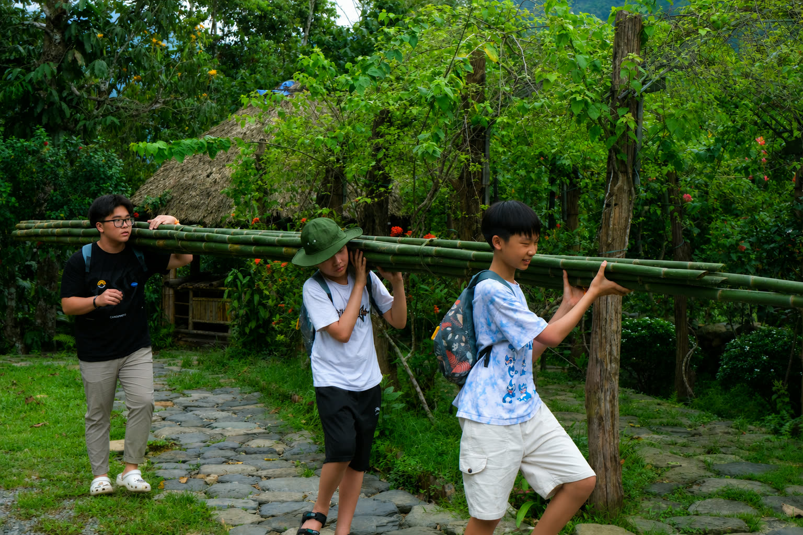
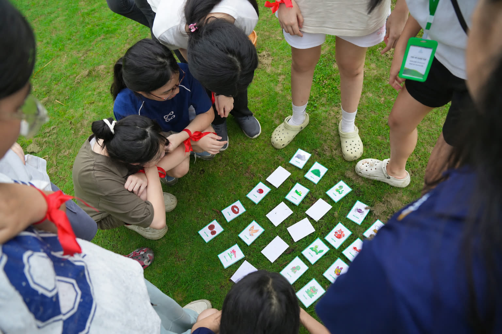
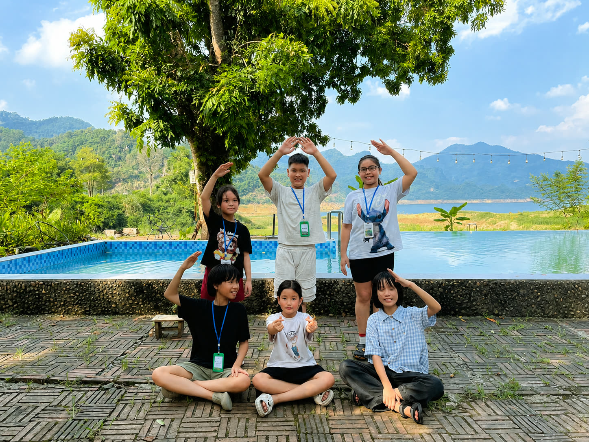
Trẻ em cần lớn lêntừ thế giới thật
PV: Thuận Thiên Naturalis luôn nhắc đến khái niệm “học từ thiên nhiên”. Theo anh, thiên nhiên dạy trẻ những điều gì mà lớp học truyền thống khó có thể mang lại?
NGUYỄN BÁ TÙNG: Trước hết, cần hiểu rằng học từ thiên nhiên là một phần của phương pháp giáo dục trải nghiệm. Đây không phải là một mô hình mới hay một xu hướng mang tính thử nghiệm, mà là phương pháp đã được nghiên cứu, chứng minh hiệu quả và áp dụng rộng rãi ở nhiều quốc gia trên thế giới.
Tại Thuận Thiên Naturalis, chúng tôi lựa chọn thiên nhiên làm môi trường học tập bởi thiên nhiên tạo ra những điều kiện rất đặc biệt để trẻ phát triển. Khi bước ra khỏi không gian lớp học quen thuộc, các em không chỉ tiếp nhận kiến thức mà còn được rèn luyện kỹ năng, phát triển cảm xúc, tâm lý và khả năng thích nghi với môi trường sống.
Quan trọng hơn, thiên nhiên tạo cơ hội để trẻ tự khám phá bản thân. Thông qua những thử thách, những trải nghiệm thực tế và những tình huống phát sinh trong quá trình học tập, các em dần hiểu được mình là ai, mình mạnh ở đâu, yếu ở đâu và cần phát triển điều gì. Đó cũng là quá trình khám phá bản thân và học cách lãnh đạo chính mình - một năng lực rất quan trọng nhưng khó có thể hình thành chỉ thông qua việc ngồi nghe giảng trong lớp học.
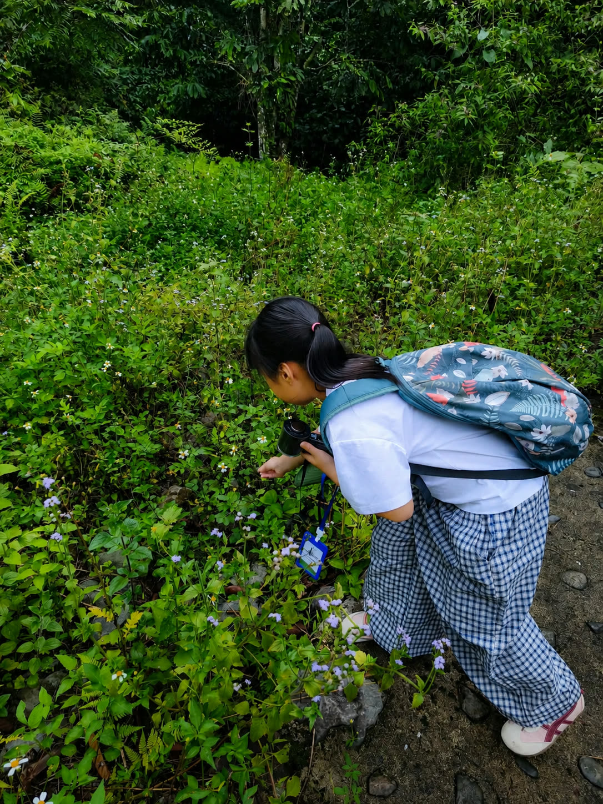
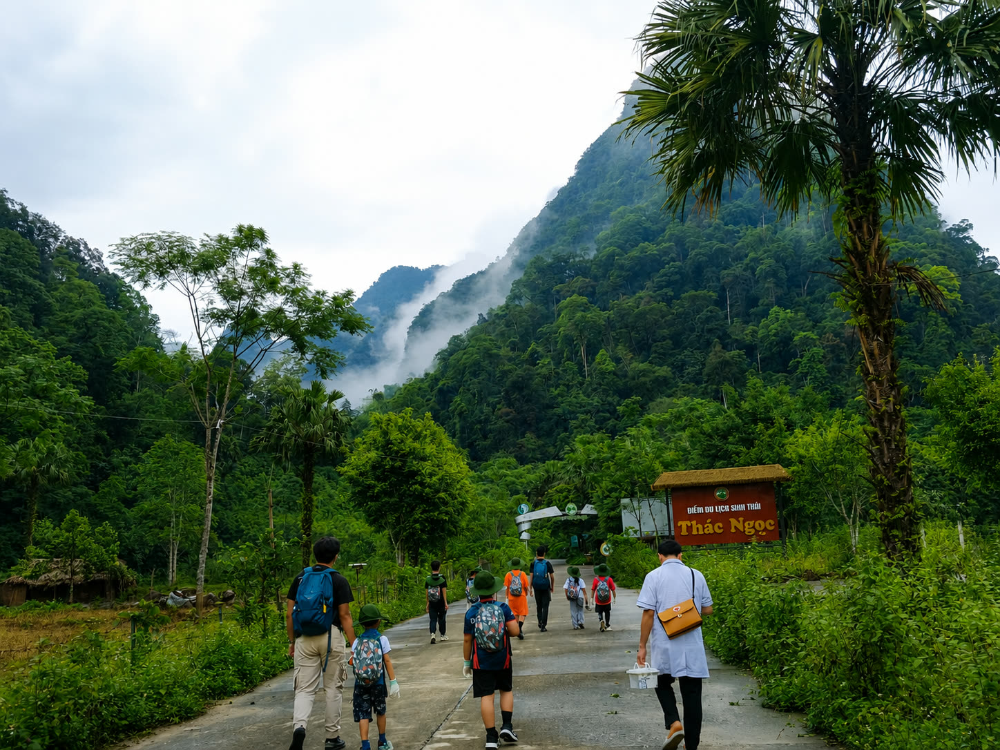
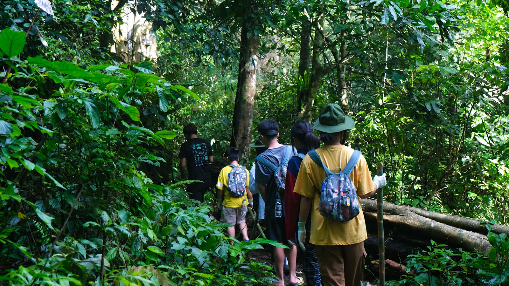
PV: Theo anh, điều gì khác biệt giữa một bài học được nghe giảng và một bài học do chính đứa trẻ tự trải nghiệm?
NGUYỄN BÁ TÙNG: Điểm khác biệt lớn nhất nằm ở cách con người tiếp nhận tri thức. Một bài học được nghe giảng là quá trình tiếp nhận kiến thức từ người khác. Người học được cung cấp lý thuyết, thông tin và hệ thống kiến thức một cách tương đối đầy đủ. Cách học này có ưu điểm rất lớn là giúp tiếp cận được nhiều nội dung trong thời gian ngắn và có tính hệ thống cao.
Trong khi đó, học qua trải nghiệm là quá trình bản thân người học tự quan sát, tự cảm nhận và tự rút ra bài học cho mình. Số lượng kiến thức có thể không nhiều bằng học lý thuyết, nhưng mức độ thẩm thấu thường sâu sắc hơn rất nhiều, bởi người học thực sự được sống trong bài học đó.
“Học qua lý thuyết giúp chúng ta biết nhiều hơn,còn học qua trải nghiệm giúp chúng ta hiểu sâu hơn.”
Nguyễn Bá TùngHai phương pháp này không đối lập mà cần bổ trợ cho nhau. Tuy nhiên, trong bối cảnh hiện nay, trải nghiệm thực tế đang là phần còn thiếu đối với rất nhiều trẻ em.
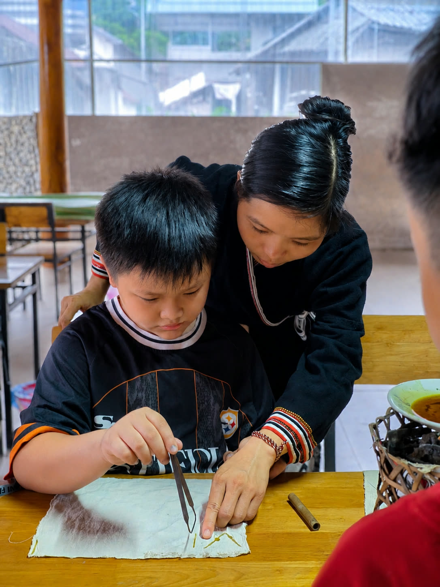
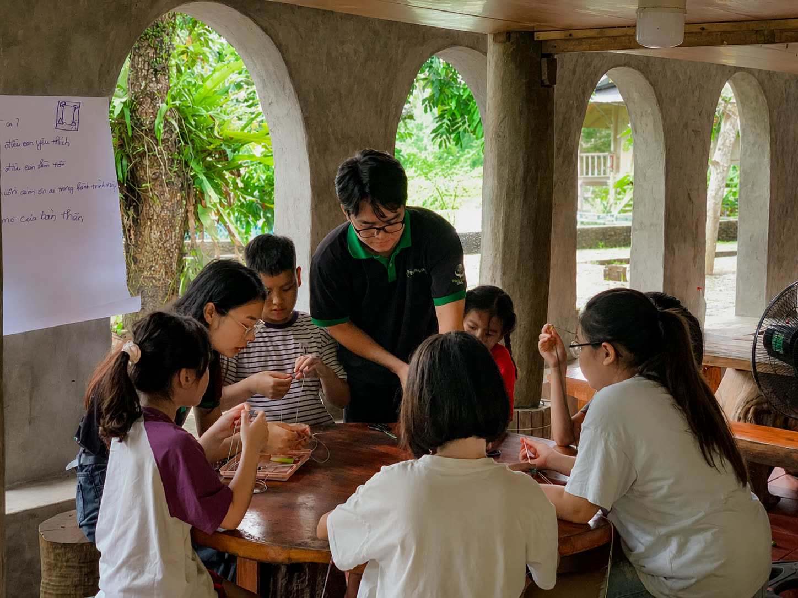
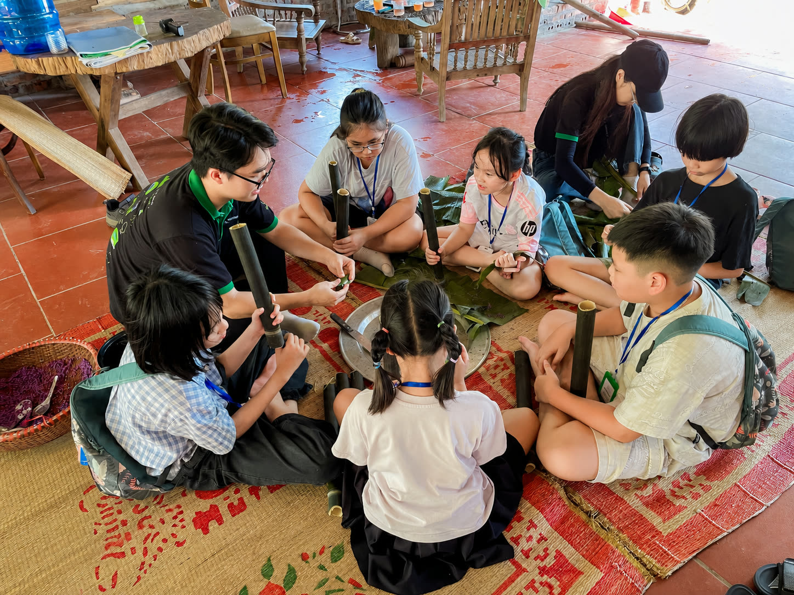
PV: Là một nhà giáo dục và huấn luyện viên, anh nhìn nhận vai trò của người thầy ngày nay như thế nào? Liệu giáo viên có đang chuyển từ người truyền đạt kiến thức sang người thiết kế những trải nghiệm học tập?
NGUYỄN BÁ TÙNG: Tôi cho rằng đây là một xu hướng rất rõ ràng trong giáo dục hiện đại. Tuy nhiên, cần hiểu rằng giáo viên không phải đang từ bỏ vai trò truyền đạt kiến thức, mà là đang bổ sung thêm một vai trò mới.
Người thầy vẫn có trách nhiệm định hướng, hướng dẫn đúng sai, cung cấp kiến thức nền tảng và những nguồn thông tin đáng tin cậy cho học sinh. Đó vẫn là chức năng cốt lõi của nghề giáo.
Điều khác biệt là ngày nay giáo viên còn trở thành người thiết kế các hoạt động học tập. Thay vì chỉ truyền tải kiến thức, người thầy cần chuyển hóa kiến thức thành những trải nghiệm, những hoạt động thực hành để học sinh có thể tham gia, khám phá và tự rút ra bài học cho mình. Tôi nghĩ đây là sự chuyển dịch rất tích cực, bởi nó giúp người học trở thành chủ thể của quá trình học tập thay vì chỉ là người tiếp nhận thông tin một cách thụ động.
PV: Có phải điều quý giá nhất mà người thầy có thể trao cho học sinh hôm nay không còn là những câu trả lời, mà là khả năng đặt câu hỏi và nuôi dưỡng sự tò mò?
NGUYỄN BÁ TÙNG: Tôi hoàn toàn đồng ý với nhận định này, đặc biệt trong bối cảnh AI đang phát triển rất nhanh. Ngày nay, cơ hội để một học sinh tiếp cận thông tin, tài liệu học tập hay các nguồn tri thức là lớn hơn rất nhiều so với trước đây. Chỉ với vài thao tác đơn giản, các em đã có thể tìm thấy lượng thông tin khổng lồ mà trước đây phải mất rất nhiều thời gian mới tiếp cận được.
Trong bối cảnh đó, vai trò của người thầy không chỉ dừng lại ở việc cung cấp kiến thức. Điều quan trọng hơn là giúp học sinh hình thành năng lực tự học. Mà trong năng lực tự học, khả năng đặt câu hỏi, sự tò mò và tinh thần tự khám phá là những yếu tố mang tính nền tảng.
Một học sinh biết đặt câu hỏi sẽ không ngừng tìm kiếm câu trả lời. Một học sinh giữ được sự tò mò sẽ luôn có động lực học tập và phát triển. Đó là những năng lực có giá trị lâu dài hơn rất nhiều so với việc ghi nhớ một lượng kiến thức nhất định.
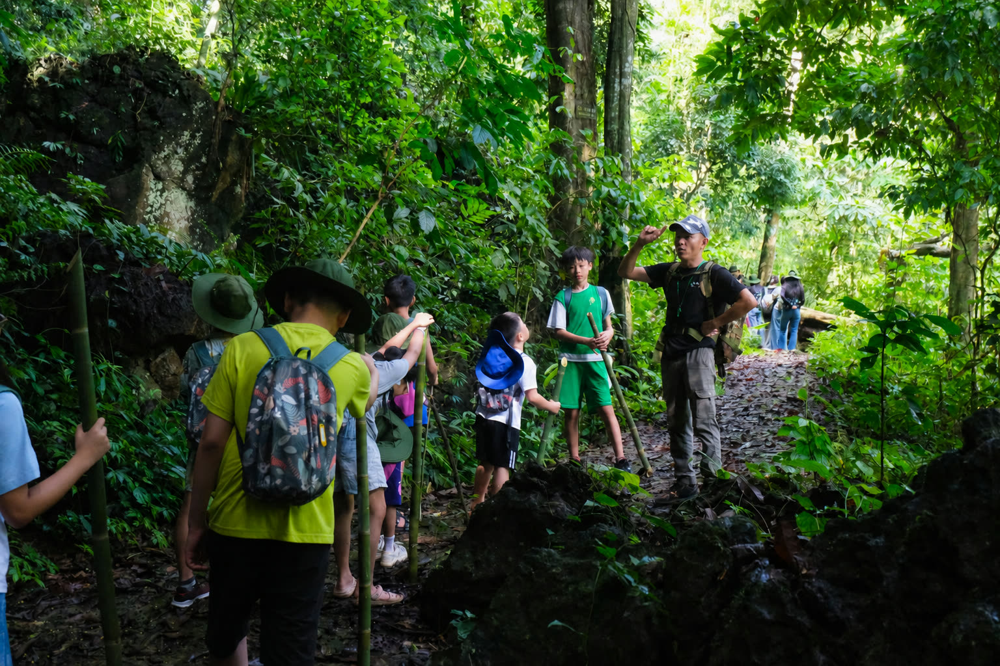
Khi công nghệ trở thànhcây cầu ra ngoài đời thực
PV: Anh là người phát triển nhiều dự án số hóa di sản, bảo tàng và game hóa trải nghiệm. Vì sao anh lựa chọn hướng đi dùng công nghệ để đưa con người đến gần hơn với thế giới thực?
NGUYỄN BÁ TÙNG: Thực ra lựa chọn này xuất phát từ chính nền tảng chuyên môn và thế mạnh cá nhân của tôi. Tôi được đào tạo về lịch sử, văn hóa, tốt nghiệp ngành Sư phạm Lịch sử và hiện đang theo đuổi các lĩnh vực liên quan đến công nghiệp văn hóa, di sản. Có thể nói tôi là người gắn bó khá sâu với lịch sử và di sản, vì vậy việc ứng dụng công nghệ vào lĩnh vực này đến với tôi một cách khá tự nhiên.
Trong quá trình phát triển các dự án, tôi nhận ra rằng công nghệ có thể mở ra rất nhiều cách tiếp cận mới đối với di sản và giáo dục. Nó giúp những câu chuyện lịch sử vốn được xem là khô khan trở nên sinh động hơn, gần gũi hơn với học sinh, sinh viên và người trẻ.
Bên cạnh đó, tôi cũng có cơ hội học tập và quan sát các mô hình ở nước ngoài, đặc biệt là tại Hàn Quốc. Tôi nhận thấy xu hướng kết hợp giữa công nghệ, giáo dục và di sản đang được nhiều quốc gia phát triển khuyến khích. Đây là hướng đi nhận được sự ủng hộ của chính quyền, các nhà giáo dục, phụ huynh và cả xã hội, bởi nó tạo ra những phương thức học tập mới phù hợp với bối cảnh chuyển đổi số.
PV: Theo anh, làm thế nào để công nghệ không giữ chân trẻ trước màn hình mà trở thành “tấm bản đồ” dẫn các em bước ra thiên nhiên?
NGUYỄN BÁ TÙNG: Theo quan điểm của tôi, trước hết cần phân biệt rõ hai loại công nghệ. Loại thứ nhất là công nghệ giữ người dùng trước màn hình. Với các nền tảng này, thời gian sử dụng càng dài thì sản phẩm càng được xem là thành công. Nhiều mạng xã hội hay nền tảng video ngắn hiện nay vận hành theo logic đó.
Tuy nhiên, còn một loại công nghệ khác mà tôi gọi là công nghệ hỗ trợ tương tác ngoài đời thực. Đây là hướng mà các dự án của tôi đang theo đuổi. Trong trường hợp này, công nghệ không phải đích đến mà chỉ là cây cầu dẫn đường. Chẳng hạn, người dùng có thể sử dụng bản đồ số để di chuyển, quét mã QR, NFC hoặc định vị GPS để khám phá các câu chuyện, trò chơi hay dữ liệu gắn với từng địa điểm cụ thể.
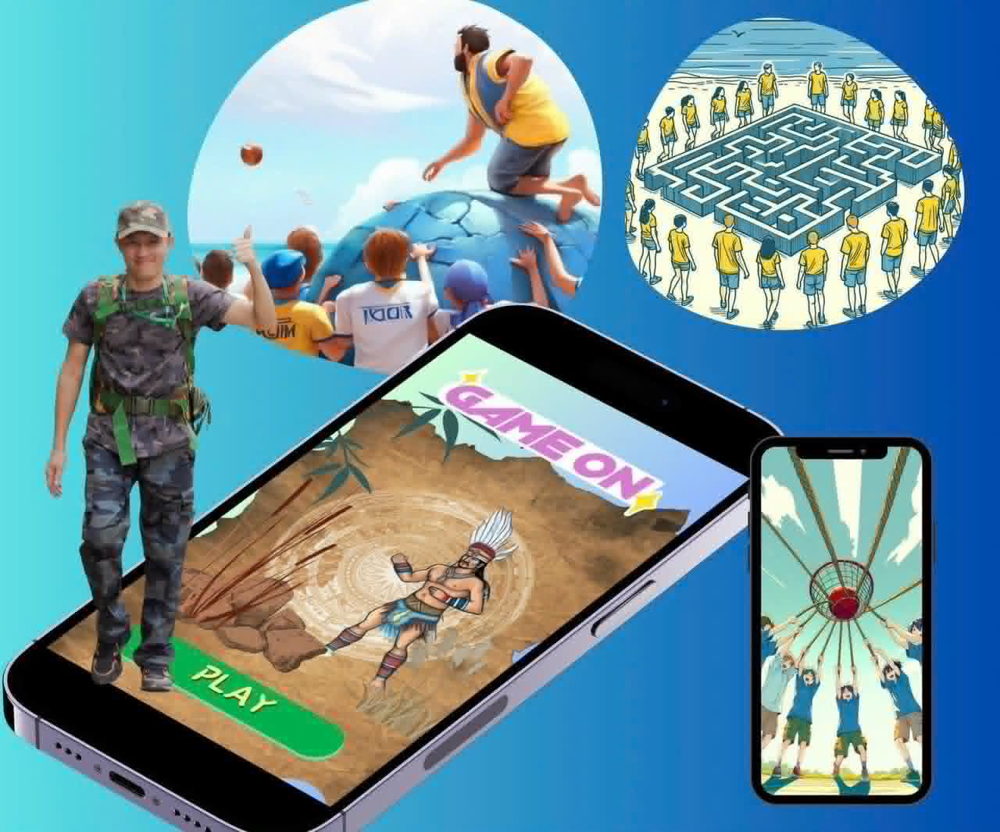
Điều quan trọng là phần lớn thời gian của người học vẫn được dành cho thế giới thực: quan sát, vận động, tương tác và khám phá trực tiếp. Công nghệ chỉ là công cụ hỗ trợ, giúp trải nghiệm trở nên hấp dẫn và sâu sắc hơn.
Nếu muốn công nghệ trở thành động lực đưa con người ra khỏi màn hình thay vì giữ họ trong đó, nhà phát triển cần xác định rất rõ mục tiêu ngay từ đầu. Chúng ta cần khuyến khích những sản phẩm công nghệ có khả năng kích thích sự vận động, khám phá và tương tác với môi trường sống, bởi khi đó công nghệ mới thực sự phục vụ con người thay vì khiến con người phụ thuộc vào nó.
“Công nghệ có thể mở ra cánh cửa đến với tri thức,nhưng thiên nhiên mới là nơi giúp những bài học ấytrở thành trải nghiệm, thành cảm xúcvà dần hình thành nhân cách.”
Trong thời đại chuyển đổi số, khi AI có thể giúp trẻ tiếp cận tri thức chỉ bằng vài cú nhấp chuột, giá trị của giáo dục không còn nằm ở việc truyền đạt thật nhiều kiến thức, mà ở việc tạo ra những trải nghiệm để trẻ biết quan sát, cảm nhận, hợp tác và thích nghi với thế giới xung quanh.
Có lẽ, điều mà một mùa hè ý nghĩa mang lại là cơ hội để một đứa trẻ được bước ra khỏi màn hình, chạm vào thiên nhiên, đối diện với thử thách và khám phá chính mình. Bởi giữa nhịp phát triển không ngừng của công nghệ, những năng lực làm nên giá trị khác biệt của con người vẫn luôn được nuôi dưỡng từ những trải nghiệm chân thực với cuộc sống.